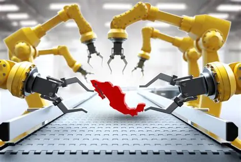

Introducción
Las prácticas industriales han sido motor de crecimiento económico y modernización en muchas regiones del mundo. Sin embargo, en comunidades en vías de desarrollo, su influencia es ambivalente: generan oportunidades de empleo y acceso a bienes, pero también introducen riesgos sociales, ambientales y de salud que pueden comprometer la sostenibilidad del progreso.
Dimensiones del Impacto
- Dimensión económica: Generación de riqueza vs. distribución desigual.
- Dimensión social: Empleo vs. vulnerabilidad laboral.
- Dimensión ambiental: Uso de recursos vs. degradación ecológica.
- Dimensión cultural: Modernización vs. pérdida de identidad.
En suma, el impacto de las prácticas industriales es un fenómeno complejo. La clave está en promover modelos de desarrollo inclusivos y sostenibles, que integren la voz de las comunidades y aseguren que el progreso no se traduzca en nuevas formas de vulnerabilidad.

Actividades Industriales que Benefician
En México, las actividades que más benefician generan empleo local, fortalecen cadenas productivas y promueven inclusión social.
🏭 Industria Manufacturera
Es uno de los pilares de la economía mexicana (electrónica, textil, química). Beneficia a las comunidades creando empleos directos, fomentando la capacitación técnica y favoreciendo la integración de pequeñas empresas locales en cadenas de suministro.
🚗 Industria Automotriz
México es líder mundial en producción. Este sector genera empleos especializados, atrae inversión extranjera e impulsa infraestructura en regiones clave como Puebla y Guanajuato.
🌱 Agroindustria y Proyectos Comunitarios
Programas recientes han financiado organizaciones de pequeños productores (café, miel, cacao), promoviendo la inclusión productiva y la sostenibilidad.
💻 Sectores Emergentes (Electrónico-Informático)
Identificados por la UNAM como núcleos del nuevo ciclo industrial, ofrecen empleo a comunidades jóvenes, favorecen la conectividad y reducen brechas digitales.
Resumen de Beneficios
| Actividad |
Beneficio Económico |
Beneficio Social |
Beneficio Ambiental/Cultural |
| Manufactura |
Empleo masivo y capacitación |
Inclusión en cadenas de valor |
Riesgo ambiental si no se regula |
| Automotriz |
Inversión extranjera y exportaciones |
Infraestructura y movilidad |
Necesidad de control de emisiones |
| Agroindustria |
Valor agregado a productos locales |
Fortalece identidad comunitaria |
Promueve prácticas sostenibles |
| Electrónica/Telecom |
Innovación y empleos técnicos |
Conectividad y educación digital |
Reduce brechas tecnológicas |